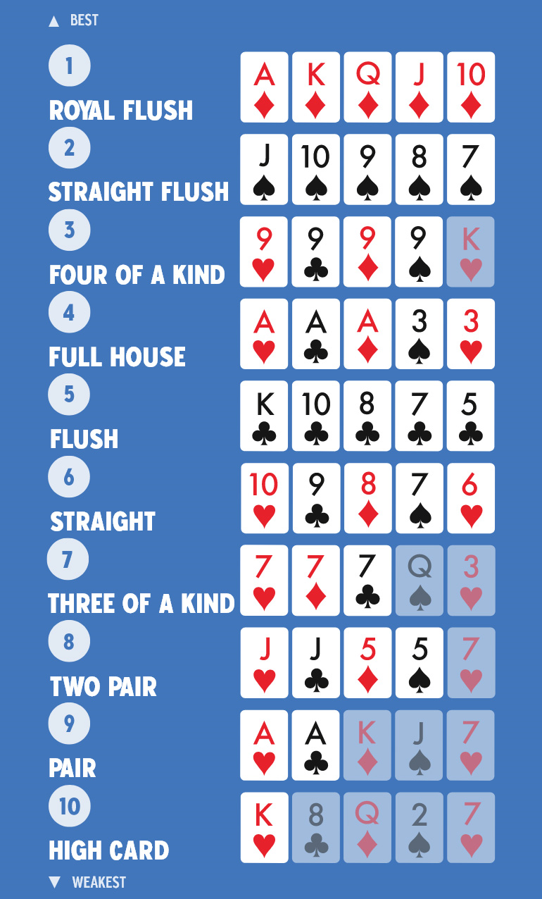

×
Liars Poker - A Lőszer Tét Szabályai
Üdvözöllek a Liars Poker halálos revolver rulettjében! Ebben a játékban a bátorságod és a szerencséd dönt.
A Játék Menete:
- **Játék indítása:** A kör kezdetén a revolver automatikusan kap **1 golyót**. Ez a minimális tét.
- **Tétrakás:**
- **"Tét hozzáadása" gomb:** Választhatsz, hogy mennyi extra golyót (1-7) teszel be a revolverbe az aktuális körben. Ez növeli a revolverben lévő golyók számát, és így a találat esélyét is.
- **"All-in" gomb:** Ha készen állsz a végső próbára, kattints az "All-in" gombra. Ezzel azonnal **8 golyót** teszel a revolverbe.
- **A döntés gombok:**
- **"Fold/lővés" gomb:** Ezt akkor nyomd meg, ha úgy döntöttél, hogy kockáztatsz, és lövéspróbát hajtasz végre az **aktuálisan betett golyókkal**. Ha elsül, vesztettél. Ha "Katt", túlélted a kört!
- **"[Win]" gomb:** Ezt akkor nyomd meg, ha **az asztali póker játékban nyertél** (és így nem kell lövéspróbát tenned). Ez új kört indít, és arany színű jutalmazásban részesülsz!
- **Kiesés:** Ha a revolver elsül, a játék véget ér, és a "Játék indítása" gombbal tudod újra kezdeni.
- **A cél:** Túlélni a lövéspróbákat, miközben licitálsz az asztali pókerben, és megpróbálod elkerülni a "Fold"-ot, ha nyertél!
Póker Kéz Erősség (Általános Sorrend):
Az alábbi kép segít megérteni a póker lapkombinációk erősségi sorrendjét.

(Megjegyzés: Az asztali játékod szabályai döntőek, ez csak egy általános segédlet.)